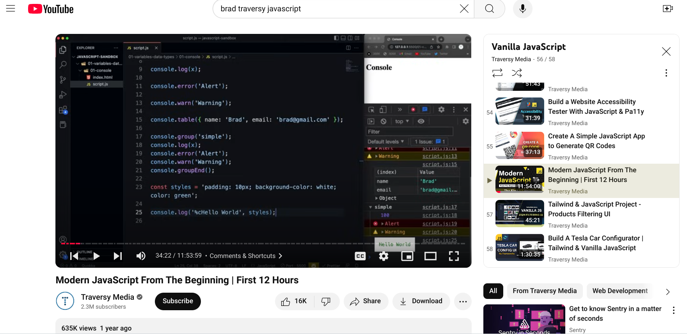
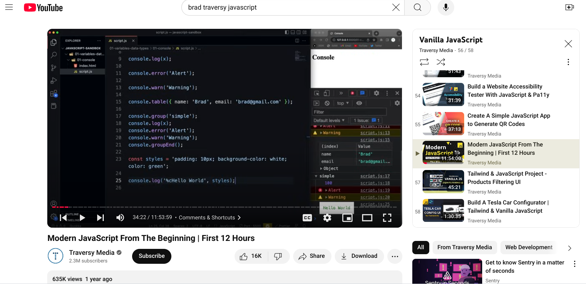

Learning JavaScript with Brad Traversy: A Comprehensive Guide
Mastering JavaScript with Brad Traversy on YouTube: A Full Course Breakdown
 

Highlighting one of the best JavaScript learning resources available: the comprehensive tutorials on Brad Traversy’s YouTube channel. These tutorials span a wide range of topics and are perfect for anyone looking to master JavaScript, from beginners to advanced learners.
What You’ll Learn from Brad Traversy’s JavaScript Tutorials
-
Introduction to JavaScript:
Brad starts with the essentials—what JavaScript is and how to write basic scripts. He explains variables, functions, and loops in a clear and approachable way, making it perfect for beginners. -
Understanding DOM Manipulation:
You’ll learn how to interact with HTML elements using JavaScript. Brad covers how to use JavaScript to modify the DOM, allowing you to dynamically update your web pages. -
Asynchronous JavaScript (Promises, Async/Await):
One of the highlights of Brad’s tutorials is his in-depth coverage of asynchronous programming. He explains callbacks, promises, and async/await with practical examples, helping you tackle complex tasks like API calls. -
Object-Oriented Programming (OOP):
Brad introduces the principles of OOP in JavaScript. You’ll learn how to create classes, objects, and methods, as well as how to leverage inheritance and encapsulation to structure your code. -
Modern JavaScript Features (ES6+):
Brad covers the latest JavaScript features, from arrow functions to destructuring and modules. These features make JavaScript more powerful and concise, and learning them is essential for staying up-to-date. -
Project-Based Learning:
Brad emphasizes learning by doing, and throughout his tutorials, he walks you through building real-world projects. These projects help solidify your understanding of JavaScript concepts while creating something tangible.
Why Brad Traversy’s Tutorials Stand Out
-
Clear and Engaging Instruction:
Brad’s teaching style is known for being easy to follow and engaging. He breaks down complex concepts into bite-sized, understandable lessons, making it easy for anyone to follow along. -
Free and Accessible:
All of Brad's tutorials are available for free on YouTube, making them accessible to everyone. There are no paywalls or ads to interrupt the learning process. -
Comprehensive Learning:
Brad’s tutorials cover everything from the fundamentals to advanced topics, making his channel a one-stop-shop for all things JavaScript. Whether you’re learning the basics or mastering advanced concepts, Brad’s content has you covered.
Take Your Time
That’s my current take on learning JavaScript with the help of Brad Traversy’s YouTube channel. JavaScript is a powerful language with many nuances, so it’s important to be patient and give yourself time to master each concept. I recommend spending at least a month dedicated to only JavaScript, and Brad’s tutorials offer plenty of content to keep you busy. Remember, JavaScript is constantly evolving, so take your time, enjoy the journey, and build your skills step by step.